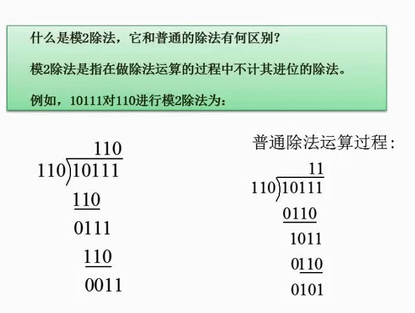
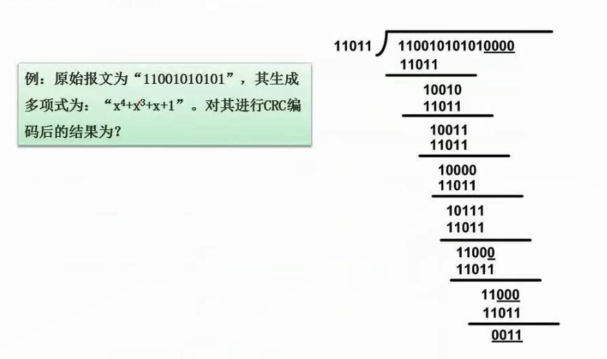

2.20 循环校验码（CRC）

模2除法
模2除法是指在做除法运算的过程中不计其进位的除法。
- 注意把110放到101下面后，不是101-110，而是做异或操作。相同值置为1，不同值置为0。
- 比如101和110的异或结果是011。1和1结果是0，0和1结果是1，1和0结果是1。

校验码CRC
CRC（循环冗余校验）是一种校验码，用于检测数据传输或存储中的错误，但不能纠错
- x4 + x3 + x + 1 意思是除数在第4，3，1，0位都是1，写成二进制数是11011，也就是除数。
- 接下来用 11001010101 后面加若干个0（生成多项式位数 - 1），此时位数是5，也就是要补4个0。
- 用110010101010000 与 11011 模2除法，得到余数0011。
- 把0011替换成刚刚的0000，得出结果 110010101010011。